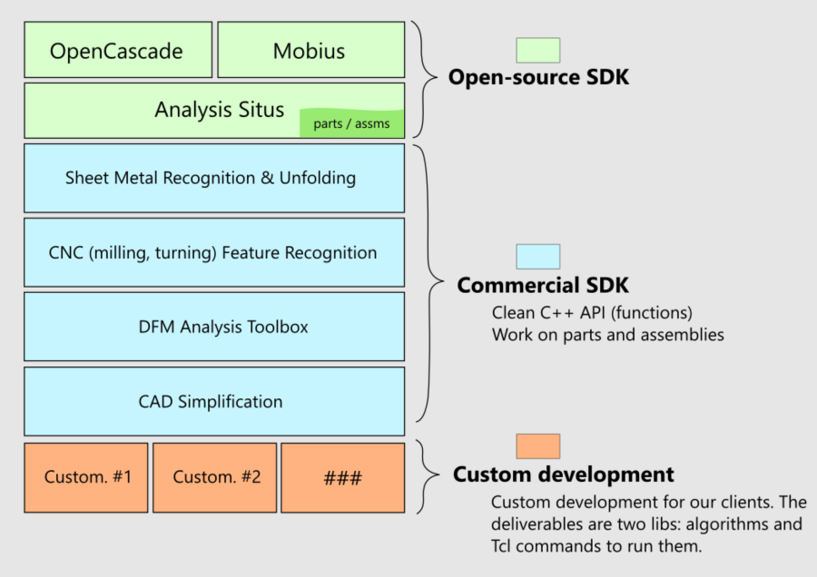

| Quaoar Studio LLC // about |
|
Quaoar Studio is team of math programmers with decades of CAD development experience:
We are the developers of engineering SDK for analysis and editing of CAD parts and assemblies. The contents of our engineering SDK are illustrated by the following diagram: 
Read more about our user stories here. |
| Quaoar Studio LLC // digest |
We are passionate about the development of CAD/CAM/CAE applications and algorithms. Our mission is to
serve manufacturers, design, and simulation engineers to create better products through smart automation. We develop
software for engineers and together with engineers. We have the following technologies in our stack:
|
| Quaoar Studio LLC // company details |
INN: 5261131367
OGRN: 1215200044410
Pervotsvetnaya str. 4, 84
603136, Nizhny Novgorod
Russia
email: sergey@quaoar.pro
|